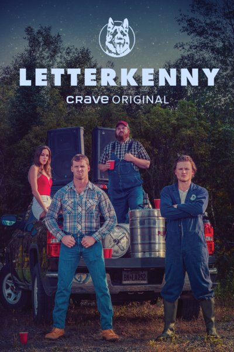
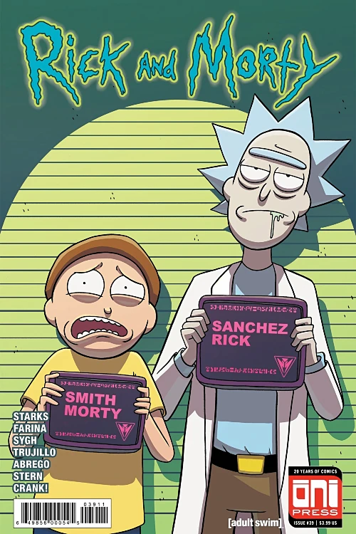

Breaking Bad
Breaking Bad is probably one of (if not the absolute) best shows made in the past decade. From the acting, to the writing, to the likeable cast of characters the plot creates, it all around is an incredible show, and if you havent watched it yet you should start now.
Letterkenny
I chose this show because it is a light-hearted, funny show to throw on in the background. Being a comedy, there is a lot of good jokes and funny sayings shared in the dialogue and even watching things like the behind the scenes proves to be hilarous--theyre acting isn't necessarily all a facade.
Lie To Me
Lie To Me is about a man who can read peoples face/body language to determine how truthful they are being. The premise alone is enough to pique my interest but when involving one of my favorite actors (Tim Roth) as the lead immediately I am in. The only bad thing about this show I can say is that sometimes it does fall into some cliches the 2010s crime shows shared--and sometimes the telling of the truth turns into an ex-machina which is never cool.
Rick And Morty
Rick And Morty is a cartoon show following the adventures of the self-proclaimed smartest man in the world and his grandson. Though at first it may sound cute and endearing--what it really turns into is an adult animated show, similar to the likes of Family Guy. The humor is on a level of its own, the guest stars add to the show for sure and the stellar animation is really puts it over the top for me.
The Boys
The Boys is the show itching that question everyones always asked: what if superheroes were not good but in fact bad with the appearance of being helpful. Though weird at some parts--this show still manages to make me laugh in one minute and have my jaw drop to the floor in shock at the next because of how events unfold (no spoilers here).